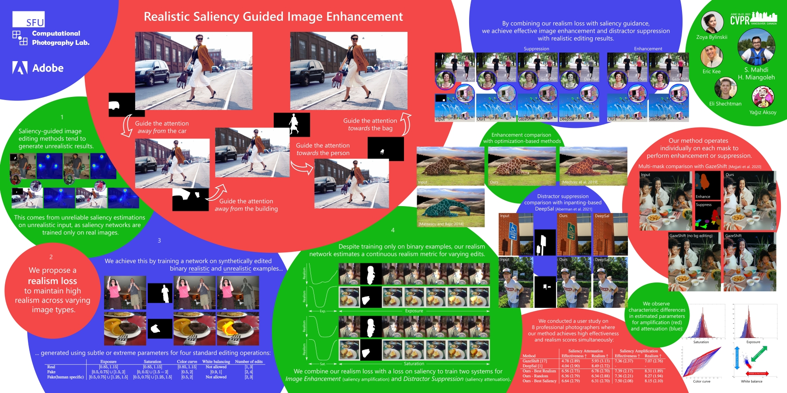

Realistic Saliency Guided Image Enhancement


(top) We develop a saliency-based image enhancement method that can be applied to multiple regions in the image to de-emphasize objects (steps 1, 2) or enhance subjects (steps 3, 4). (bottom) Our novel realism loss allows us to apply realistic edits to a wide variety of objects while state-of-the-art methods GazeShift and DeepSal may generate less realistic editing results.
Abstract
Common editing operations performed by professional photographers include the cleanup operations: de-emphasizing distracting elements and enhancing subjects. These edits are challenging, requiring a delicate balance between manipulating the viewer's attention while maintaining photo realism. While recent approaches can boast successful examples of attention attenuation or amplification, most of them also suffer from frequent unrealistic edits. We propose a realism loss for saliency-guided image enhancement to maintain high realism across varying image types, while attenuating distractors and amplifying objects of interest. Evaluations with professional photographers confirm that we achieve the dual objective of realism and effectiveness, and outperform the recent approaches on their own datasets, while requiring a smaller memory footprint and runtime. We thus offer a viable solution for automating image enhancement and photo cleanup operations.
Video
Implementation
Training and Inference GitHub Repository
Paper
 |
 |
Poster
|  |
BibTeX
author={S. Mahdi H. Miangoleh and Zoya Bylinskii and Eric Kee and Eli Shechtman and Ya\u{g}{\i}z Aksoy},
title={Realistic Saliency Guided Image Enhancement},
journal={Proc. CVPR},
year={2023},
}